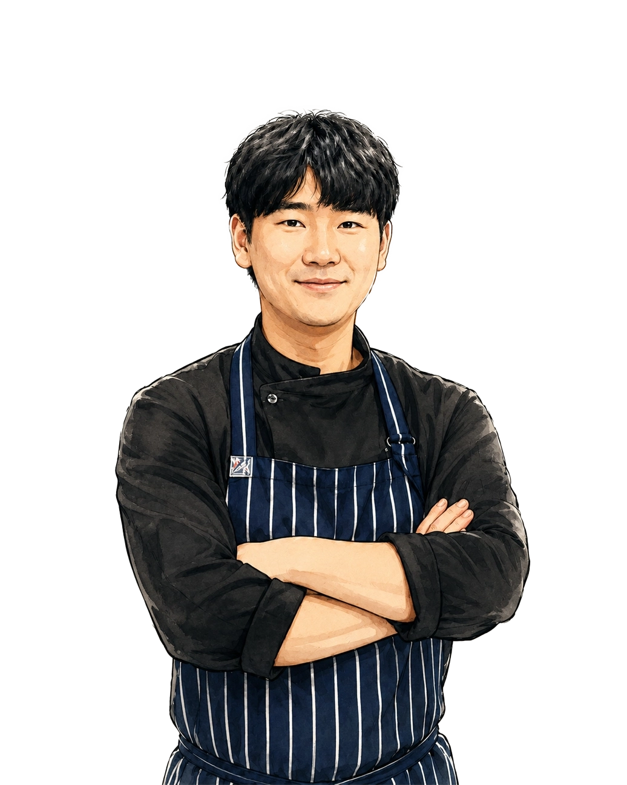
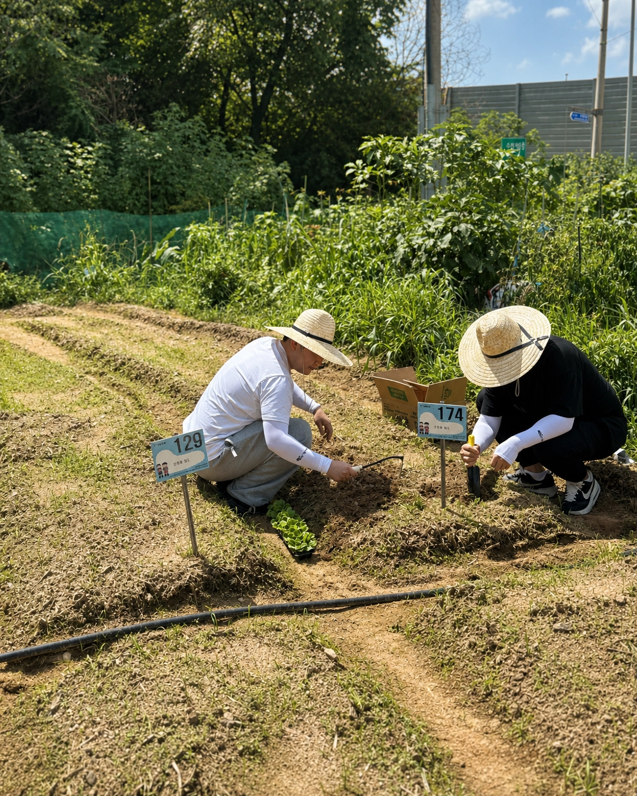

A little Australia.
In Yeonnam.
업투미는 호주에서 경험한
자유로운 미식 문화에서 시작되었습니다.
호주 식재료와 한국의 제철 재료를 조화롭게 담아,
일반식과 비건식으로 구성된 계절의 코스를 선보입니다.
격식보다는 편안함을,
익숙함보다는 새로운 즐거움을 추구하며
매 시즌 업투미만의 방식으로 재료를 풀어냅니다.

From Australia,
with a point of view.
Owner Chef
Minhoo Kim
호주 르 꼬르동 블루에서 요리의 기반을 다진 오너 셰프는
시드니의 다채로운 식문화와 식재료를 경험하며
자신만의 감각을 쌓아왔습니다.
2020년 업투미를 시작한 이후,
계절과 재료에 대한 호기심을 계속해서 이어가고 있습니다.
Grown close.
Served in season.
업투미는 직접 기른 허브와 채소를 계절에 맞춰 사용합니다.
제철 식재료가 가장 좋은 상태일 때 수확해,
매 시즌 달라지는 코스에 자연스럽게 담아냅니다.
